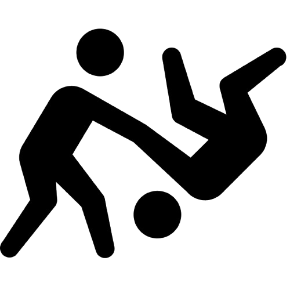

Regras
Estabelecidas pela Federação Internacional de Judo
Objetivo do combate: Derrubar o adversário ou imobilizá-lo por até 20 segundos. Um combate é inciado pelo termo “Hajime” e dura 4 minutos.
Técnicas utilizadas:
➢ Nage-waza: Projeção ou derrube do adversário.
➢ Katame-waza: Controlo do adversário no solo, como imobilizações. Quanto mais tempo durar a imobilização, maior é a pontuação obtida pelo judoca.
Pontuações:
➢ Ippon: Pontuação máxima, que encerra a luta. Quando um atleta domina o adversário e imobiliza-o, no solo, por 20 segundos.
➢ Waza-ari: Dois waza-ari equivalem a um ippon. É concedido quando um atleta derruba o oponente, mas sem um controlo total.
Penalizações:
➢ Shido: Aviso por cometer faltas leves, como falso ataque ou reajustar o equipamento sem autorização do árbitro.
➢ Hansoku-make: Desqualificação por faltas graves ou por cometer 3 shidos.